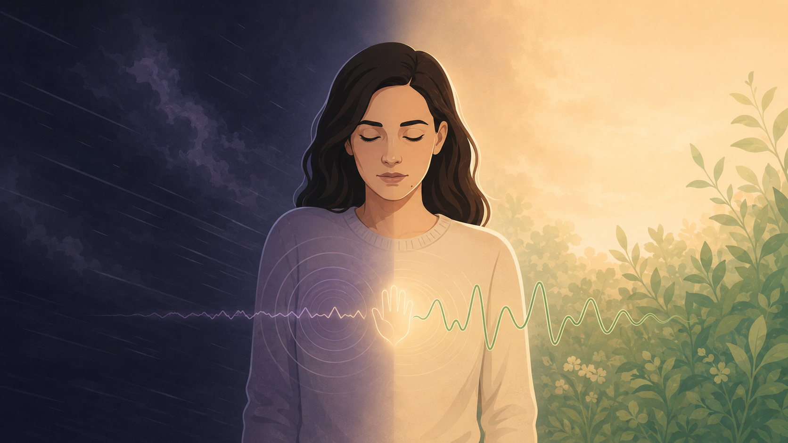
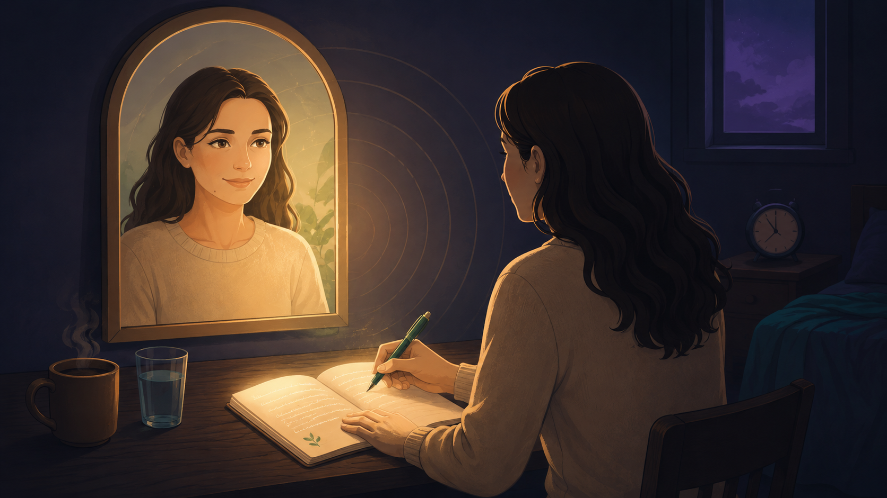

By Rustam Iuldashov
30 years lived experience with chronic migraine | Sources: 22 peer-reviewed references including Psychological Science (2009), Diabetes Care RCT (2016), and a British Journal of Health Psychology meta-analysis (51 studies) | Last updated: June 25, 2026
Medical Review: This content is based on peer-reviewed research from Psychological Science, Diabetes Care, British Journal of Health Psychology, Journal of Clinical Psychology, Clinical Psychology Review, Cephalalgia, and Frontiers in Neurology. Rustam Iuldashov is not a medical professional. Always consult a qualified healthcare provider for health-related decisions.
📋 Key Takeaways
- Self-criticism is not motivation. Harsh self-judgment predicts more depression, anxiety, and procrastination — not better behavior. [2][6]
- Self-compassion has three parts: kindness over judgment, shared humanity over isolation, and balanced awareness over over-identification. [4]
- It beats positive thinking. Affirmations backfire for the people who need them most; self-compassion works because it asks for honesty, not a lie. [8][9]
- It reaches the body. Self-kindness raises heart-rate variability and lowers arousal — the same calming physiology relevant to migraine’s autonomic system. [11][12]
- The clinical evidence is strong. Across 51 chronic-illness studies it tracks with less distress, and in a diabetes RCT it lowered HbA1c by nearly 1%. [3][15]
- Five minutes counts. Brief, tested practices — the Self-Compassion Break, the Sick-Friend Letter, soothing touch — measurably raise self-compassion. [19][20]
The Narrator at 3 a.m.
It’s 3 a.m. The attack has you flat. You cancelled on friends, the laundry is mounting, and a voice in your head has opinions about all of it. You’re lazy. Everyone’s sick of hearing about your head. You’re a burden.
You would never say this to another sick person. You’d never lean over a friend mid-migraine and hiss, “Honestly, you’re pathetic.” Yet you say it to yourself, and you say it with conviction.
If you live with migraine, you’ve met this narrator. After 30 years with the disease, I know its voice intimately. What I didn’t know for most of those years is that the narrator lies — and that answering it back is one of the most evidence-based things you can do for your mind and your body alike.
You’d offer a sick friend tenderness without a second thought. The entire practice is learning to turn that same voice inward.
The Narrator Is Not You
Narrative therapy turns on a single move: separate the person from the problem. The migraine isn’t you. It’s a companion you live alongside — which is why we call it Mi, not “my disease.” The same separation works on the inner critic. That voice running commentary at 3 a.m. is not your identity and not the truth. It’s a voice — one you can name, examine, and answer. [1]
This is not a semantic game. Harsh self-judgment is one of the strongest psychological predictors of depression and anxiety we have. [2] In chronic illness, the people who berate themselves hardest tend to carry the heaviest emotional load. [3] The narrator swears it’s keeping you in line. The data say it’s pulling you under.
What Self-Compassion Actually Is — and Isn’t
Kristin Neff, who built the modern science of this field, defines self-compassion through three moves: meet your suffering with kindness instead of judgment; recognize that pain and limitation are part of being human, not a private failing; and hold hard feelings in steady awareness instead of drowning in them. [4] In plain terms — be as decent to yourself as you’d be to a sick friend.
The number one reason people refuse is the fear that kindness breeds laziness. [5] Understandable. Also wrong. Self-compassionate people aim just as high as everyone else; they simply don’t collapse when they miss. [5] They procrastinate less, because they aren’t frozen by the dread of self-punishment. [6] Their goals lean toward mastery — the drive to learn and grow — and away from the fear of failing. [7]
Kindness doesn’t lower the bar. It clears away the shame that keeps you from getting back up to it.
Why This Beats “Positive Thinking”
Here the evidence turns surprising. In 2009, researchers had people repeat the affirmation “I am a lovable person.” For those who already felt good about themselves, it helped a little. For people with low self-esteem — the exact people the phrase was meant to rescue — it backfired. Their mood sank. Their self-esteem dropped. [8] The mind measures the gap between the cheerful claim and what you actually believe, and the gap becomes a reminder of everything you fear you’re not.
Self-compassion asks for something harder and more honest. You don’t have to believe “I’m doing great” while vomiting from a migraine. You only have to admit “this is brutal right now, and I deserve kindness anyway.” No lie required. That may be why self-compassion predicts low anxiety and depression better than self-esteem does — without self-esteem’s wobble. [9]
The Body Keeps Score, Too
Self-criticism and self-kindness aren’t confined to the mind. They register in the nervous system. Researchers describe two circuits: a threat system that ignites under self-attack, and a soothing system wired to safety and care. [10] Guide someone into self-compassion and their arousal falls, parasympathetic activity climbs, and heart-rate variability — the marker of the calming “rest-and-digest” branch carried by the vagus nerve — rises. [11] Self-criticism does the reverse, holding the body braced as if under siege. [10]

For migraine, this is not abstract. Migraine travels with autonomic dysregulation; a meta-analysis of headache patients found reduced interictal autonomic function against controls, [12] and HRV tends to drop during attacks, the signature of a stress-response system knocked off balance. [13] This is precisely the territory Mi Watch listens to. So a five-minute practice that nudges the nervous system from “threatened” toward “safe” isn’t soft comfort — it’s working the same physiology your watch already tracks.
Across 51 studies, self-compassion was strongly and consistently tied to lower distress in chronic illness, with a large pooled effect. [3] A separate review of interventions found gains in depression, anxiety, pain, and quality of life. [14]
The most arresting result: in a randomized trial of people with diabetes, an eight-week self-compassion program didn’t just lift mood — it cut HbA1c, a hard blood marker of glucose control, by nearly a full percent. [15] Kindness changed the bloodwork.
In migraine, the picture is younger and worth reading straight. Self-compassion isn’t necessarily lower in people with migraine than in anyone else. [16] But where it runs higher, it tracks with less pain, less disability, and fewer symptoms of depression and anxiety. [17][18] A buffer, not a cure.
⚠️ A Word About the Harsh Voice
Migraine carries elevated rates of depression, anxiety, and — this matters — suicidal thinking. [18] Self-compassion is a practice, not a treatment for clinical depression. If the narrator has turned to thoughts of being better off gone, or of harming yourself, treat that as the medical emergency it is. Reach a crisis line, your doctor, or local emergency services today. You deserve real support, not just a gentler thought.
Also seek prompt medical care for any sudden, severe “worst-ever” headache, or a headache with fever, confusion, weakness, vision loss, or trouble speaking — these can signal something other than migraine.
Three Exercises, Five Minutes a Day
These come straight from Neff’s research and the brief, tested programs built on it — a three-week course that significantly raised self-compassion and optimism while cutting rumination, [19] and the eight-week Mindful Self-Compassion program shown in a randomized trial to lift self-compassion and well-being. [20]

1 — The Self-Compassion Break (2 minutes, mid-attack)
When the pain and the blame land together, stop and say three things, silently. This is a moment of suffering — you name it. Suffering is part of being human — you’re not uniquely broken. May I be kind to myself right now — you offer warmth. Three sentences, mapped to Neff’s three components, resetting the loop in under two minutes.
2 — The Sick-Friend Letter (5 minutes, once a day)
Picture a close friend with your exact condition, voicing your exact harsh thoughts about themselves. Write what you’d actually tell them. Then read it back, addressed to you. The distance between the cruelty you aim inward and the gentleness you’d offer outward is the entire lesson. Closing it is the practice.
3 — Soothing Touch and a Phrase (1 minute, anytime)
Lay a hand over your heart, or hold your own forearm — physical warmth helps trip the soothing system researchers link to higher HRV. [11] Add one honest line: This is hard, and I’m here with you. Compassionate self-talk raised HRV even more when people practiced it in front of a mirror [11] — so yes, meeting your own eyes is allowed.
30 years, and what I know
I’ve lived with migraine for 30 years, and for most of them I treated self-criticism as discipline — as if being hard on myself was the price of being responsible. It wasn’t discipline. It was a second illness layered on the first.
None of this asks you to like your migraine. It asks you to stop fighting a two-front war — one against the pain, one against yourself. Drop the second front, and you have more left for the first.
📋 Key Takeaways
- Self-criticism is not motivation. Harsh self-judgment predicts more depression, anxiety, and procrastination — not better behavior. [2][6]
- Self-compassion has three parts: kindness over judgment, shared humanity over isolation, and balanced awareness over over-identification. [4]
- It beats positive thinking. Affirmations backfire for the people who need them most; self-compassion works because it asks for honesty, not a lie. [8][9]
- It reaches the body. Self-kindness raises heart-rate variability and lowers arousal — the same calming physiology relevant to migraine’s autonomic system. [11][12]
- The clinical evidence is strong. Across 51 chronic-illness studies it tracks with less distress, and in a diabetes RCT it lowered HbA1c by nearly 1%. [3][15]
- Five minutes counts. Brief, tested practices — the Self-Compassion Break, the Sick-Friend Letter, soothing touch — measurably raise self-compassion. [19][20]
⚕️ Important Medical Disclaimer
This article is for informational and educational purposes only and does not constitute medical advice, diagnosis, or treatment. The author, Rustam Iuldashov, is not a licensed physician, neurologist, or psychotherapist. He is a patient advocate with 30 years of personal experience living with chronic migraine.
All clinical claims in this article are sourced from peer-reviewed research published in indexed medical journals. Study designs and sample sizes are noted in the references below.
Self-compassion is a wellbeing practice, not a treatment for clinical depression, anxiety disorders, or any medical condition. Group-level findings do not guarantee individual results, and some people — particularly those with a history of trauma or intense self-criticism — may find compassion practices difficult at first and benefit from doing them with a qualified therapist. If you are experiencing a mental health crisis or thoughts of self-harm, contact a crisis helpline in your country immediately.
Always consult a qualified healthcare provider for questions about your individual health, migraine treatment, or medication decisions. This content was last reviewed for accuracy on June 25, 2026.
References
- White M, Epston D. Narrative Means to Therapeutic Ends. New York: W.W. Norton & Company, 1990. ISBN: 978-0-393-70098-8. Foundational theoretical text.
- Warren R, Smeets E, Neff KD. “Self-criticism and self-compassion: Risk and resilience for psychopathology.” Current Psychiatry, 15(12):18–32 (2016). Study design: Narrative review.
- Baxter L, et al. “Self-compassion and psychological distress in chronic illness: A meta-analysis.” British Journal of Health Psychology (2025). doi:10.1111/bjhp.12761. Study design: Meta-analysis. 51 studies, 57 effect sizes (r = −.516).
- Neff KD. “Self-compassion: An alternative conceptualization of a healthy attitude toward oneself.” Self and Identity, 2(2):85–101 (2003). doi:10.1080/15298860309032. Study design: Construct development.
- Neff KD, Hsieh YP, Dejitterat K. “Self-compassion, achievement goals, and coping with academic failure.” Self and Identity, 4(3):263–287 (2005). doi:10.1080/13576500444000317. Study design: Cross-sectional. n=222.
- Sirois FM, Nauts S, Molnar DS. “Self-compassion and bedtime procrastination: an emotion regulation perspective.” Mindfulness, 10:3434–3445 (2019). doi:10.1007/s12671-019-01277-6. Study design: Survey/correlational.
- Neff KD, Rude SS, Kirkpatrick KL. “An examination of self-compassion in relation to positive psychological functioning and personality traits.” Journal of Research in Personality, 41(4):908–916 (2007). doi:10.1016/j.jrp.2006.08.002. Study design: Cross-sectional.
- Wood JV, Perunovic WQE, Lee JW. “Positive self-statements: Power for some, peril for others.” Psychological Science, 20(7):860–866 (2009). doi:10.1111/j.1467-9280.2009.02370.x. Study design: Experimental.
- Neff KD, Vonk R. “Self-compassion versus global self-esteem: Two different ways of relating to oneself.” Journal of Personality, 77(1):23–50 (2009). doi:10.1111/j.1467-6494.2008.00537.x. Study design: Cross-sectional + experimental. n=2,187.
- Gilbert P. The Compassionate Mind. London: Constable, 2009. ISBN: 978-1-84901-098-6. Affect-regulation systems model (theory).
- Kirby JN, Doty JR, Petrocchi N, Gilbert P. “The current and future role of heart rate variability for assessing and training compassion.” Frontiers in Public Health, 5:40 (2017). doi:10.3389/fpubh.2017.00040. Study design: Review.
- Koenig J, et al. “Vagally mediated heart rate variability in headache patients — a systematic review and meta-analysis.” Cephalalgia, 36(3):265–278 (2016). doi:10.1177/0333102415583989. Study design: Systematic review and meta-analysis. n=424 migraine, 268 controls.
- Zhang L, et al. “Heart rate variability analysis in episodic migraine: A cross-sectional study.” Frontiers in Neurology, 12:647092 (2021). doi:10.3389/fneur.2021.647092. Study design: Cross-sectional. n=18+18.
- Mistretta EG, Davis MC. “Meta-analysis of self-compassion interventions for pain and psychological symptoms among adults with chronic illness.” Mindfulness, 13:267–284 (2022). doi:10.1007/s12671-021-01766-7. Study design: Meta-analysis. N=21 trials.
- Friis AM, Johnson MH, Cutfield RG, Consedine NS. “Kindness matters: A randomized controlled trial of a mindful self-compassion intervention improves depression, distress, and HbA1c among patients with diabetes.” Diabetes Care, 39(11):1963–1971 (2016). doi:10.2337/dc16-0416. Study design: RCT. n=63.
- Çalışır T. “Self-compassion and pain experience in migraine patients.” Cukurova Medical Journal (2026). Study design: Cross-sectional. n=68 migraine, 58 controls.
- Vasigh A, Tarjoman A, Soltani B, Borji M. “The relationship between mindfulness and self-compassion with perceived pain in migraine.” Archives of Neuroscience, 6(2):e91623 (2019). doi:10.5812/ans.91623. Study design: Cross-sectional.
- Karakurum-Goksel B, et al. “Self-esteem and self-compassion status of migraine patients in Turkey: a multi-center study.” Frontiers in Neurology, 16:1566423 (2025). doi:10.3389/fneur.2025.1566423. Study design: Multicenter case-control.
- Smeets E, Neff KD, Alberts H, Peters M. “Meeting suffering with kindness: Effects of a brief self-compassion intervention for female college students.” Journal of Clinical Psychology, 70(9):794–807 (2014). doi:10.1002/jclp.22076. Study design: RCT. n=52.
- Neff KD, Germer CK. “A pilot study and randomized controlled trial of the Mindful Self-Compassion program.” Journal of Clinical Psychology, 69(1):28–44 (2013). doi:10.1002/jclp.21923. Study design: RCT. n=52.
- MacBeth A, Gumley A. “Exploring compassion: A meta-analysis of the association between self-compassion and psychopathology.” Clinical Psychology Review, 32(6):545–552 (2012). doi:10.1016/j.cpr.2012.06.003. Study design: Meta-analysis. k=20, n=4,007.
- Zessin U, Dickhäuser O, Garbade S. “The relationship between self-compassion and well-being: A meta-analysis.” Applied Psychology: Health and Well-Being, 7(3):340–364 (2015). doi:10.1111/aphw.12051. Study design: Meta-analysis. k=79.

How We Create Content
- Peer-reviewed sources only. This article draws from Psychological Science, Diabetes Care, British Journal of Health Psychology, Journal of Clinical Psychology, Clinical Psychology Review, Cephalalgia, Frontiers in Neurology, Frontiers in Public Health, and Journal of Personality.
- Study transparency. Study design and sample sizes noted for all clinical references.
- Source verification. All claims backed by numbered references with DOI links.
- Experience + Science. 30 years personal migraine experience combined with peer-reviewed evidence and narrative therapy frameworks (Michael White, David Epston).
- Honest framing. Where the migraine-specific evidence is mixed or early, the article says so rather than overstating it.
- No conflicts of interest. No funding from pharmaceutical companies, psychotherapy practices, or supplement manufacturers.
Talk to Yourself Like Someone You’re Helping
Migraine Companion was built on narrative therapy — the belief that you are not your migraine, and not the critic that speaks for it. Track your attacks, yes. But also practice the kinder voice, and watch what your body does when the threat quiets down.
Last reviewed: June 2026
Next scheduled review: December 2026